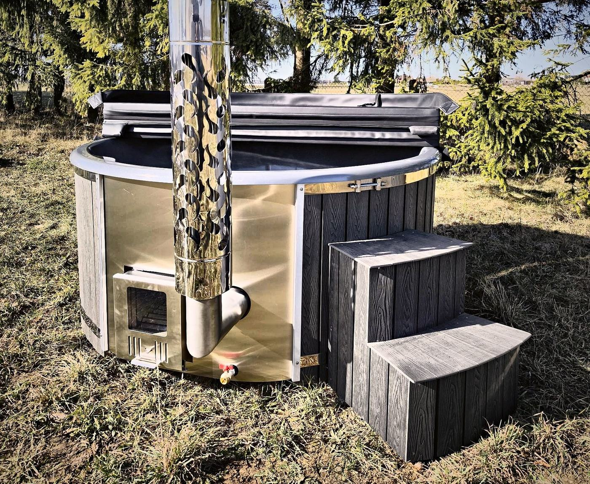

Stand: 10. November 2026

Ein Badefass steht viele Jahre am selben Platz – und es ist schwer: Gefüllt mit Wasser und Badenden wiegt es deutlich über eine Tonne. Ein guter Untergrund ist deshalb die wichtigste Vorbereitung vor der Lieferung. Er schützt das Gestell, verhindert, dass sich das Badefass verzieht, und hält Feuchtigkeit vom Holz fern.
Was ein Fundament leisten muss
Unabhängig davon, wofür Sie sich entscheiden, sollte der Untergrund diese Anforderungen erfüllen:
- Eben: Das Badefass muss waagerecht stehen. Ein schiefer Untergrund belastet das Gestell ungleichmäßig und lässt das Wasser einseitig höher stehen.
- Tragfähig: Der Untergrund muss das Gewicht des gefüllten Badefasses mit den Badenden dauerhaft tragen, ohne sich zu setzen.
- Entwässert: Unter dem Badefass darf sich kein Wasser sammeln. Regen und Spritzwasser müssen ablaufen können.
- Kein direkter Bodenkontakt: Der Unterbau sollte keinen direkten Kontakt mit Erde, Feuchtigkeit oder Schnee haben.
- Groß genug: Planen Sie neben dem Badefass Platz für Ofen, Treppe und den Zugang für Wartungsarbeiten ein.
Geeignete Untergründe
Betonplatte
Eine ebene Betonplatte ist die solideste Lösung. Sie verteilt das Gewicht gleichmäßig, setzt sich nicht und ist leicht sauber zu halten. Achten Sie auf ein leichtes Gefälle oder eine Drainage, damit sich kein Wasser unter dem Badefass staut.
Verdichteter Schotter mit Pflaster
Eine gut verdichtete Schotterschicht mit Pflaster oder Platten darauf ist eine bewährte Alternative. Wasser kann durch die Fugen und den Schotter versickern. Wichtig ist eine sorgfältige Verdichtung, damit sich die Fläche später nicht absenkt.
Terrasse
Auf einer Holz- oder WPC-Terrasse kann ein Badefass sehr schön wirken – aber nur, wenn die Terrasse für diese Last gebaut ist. Eine normale Gartenterrasse ist dafür in der Regel nicht ausgelegt. Lassen Sie die Unterkonstruktion im Zweifel von einem Fachbetrieb planen.
Was Sie vermeiden sollten
- Aufstellen direkt auf Rasen, Erde oder Sand ohne befestigten Unterbau
- Flächen, auf denen sich bei Regen Wasser sammelt
- Terrassen, deren Unterkonstruktion nicht für die Last ausgelegt ist
- Stellen, an denen der Unterbau dauerhaft mit Schnee oder Feuchtigkeit in Kontakt steht
Ein Fundament, das das Badefass vom Boden abhebt, schützt vor allem das Holz: Steht es in der Feuchtigkeit, kann es quellen, sich verziehen, schimmeln oder faulen.
Der beste Platz im Garten
Neben dem Untergrund lohnt ein Blick auf die Umgebung. Wir empfehlen einen gut belüfteten, möglichst überdachten Ort – etwa unter einem Unterstand, in einem Pavillon oder auf einer überdachten Terrasse. So ist das Holz besser vor Sonne, Regen und Schnee geschützt. Bei einer Acryl-Innenwanne ist ein Dach Pflicht; ein Badefass mit Gelcoat-Innenwanne darf auch im Freien stehen.
Beim Holzofen kommt der Schornstein hinzu: Halten Sie den in der Bedienungsanleitung angegebenen Sicherheitsabstand zu Wänden, Dächern, Bäumen und anderen brennbaren Materialien ein. Steht das Badefass nah an einer Wand, Hecke, einem Baum oder Dach oder an einem windigen Platz, empfehlen wir die Schornsteinverlängerung um 1 m. Dann liegt die Schornsteinspitze über dem Hindernis, der Ofen zieht besser, und Rauch und Funken treten höher aus.
Klären Sie vor dem Bau des Fundaments außerdem, ob Aufstellung und Schornstein bei Ihrer Gemeinde genehmigungs- oder anzeigepflichtig sind.
Die Treppe: fester Stand auch hier
Zu jedem Badefass gehört eine geschlossene Holztreppe. Auch sie braucht einen festen, ebenen Untergrund, damit sie nicht wackelt. Ihre Position wählen Sie im Konfigurator wie auf einem Ziffernblatt, so dass sie nicht mit dem Ofen oder anderen Teilen kollidiert. Steht das Badefass auf unebenem Grund oder an einer Terrassenkante oder brauchen Sie eine besondere Höhe oder Breite, fertigen wir die Treppe auf Anfrage individuell an.
Wasser ablassen: wohin mit dem Badewasser?
Ein Badefass wird regelmäßig entleert – je nach Nutzung alle paar Wochen, und vor einer Winterpause vollständig. Überlegen Sie schon bei der Planung, wohin das Wasser abläuft, und halten Sie den Bereich unter dem Badefass trocken.
Strom für Massage, Licht und Steuerung
Der Holzofen braucht keinen Strom. Wenn Sie aber Hydro- oder Luftmassage, LED-Beleuchtung, WLAN-Steuerung oder eine Elektroheizung wählen, planen Sie einen Stromanschluss in der Nähe ein. Die Installation muss von einer Elektrofachkraft nach den örtlichen Vorschriften erfolgen. Für die WLAN-Steuerung sollte der Platz zudem in Reichweite Ihres WLANs liegen.
Lieferung: Denken Sie an den Weg zum Fundament
Wir liefern das Badefass auf einer Palette bis zur Bordsteinkante. Abladen, Transport zum Aufstellort und Aufstellung übernehmen Sie, sofern nichts anderes vereinbart ist. Prüfen Sie deshalb vorab, ob die Lieferadresse für einen Lkw erreichbar ist und wie das Badefass vom Straßenrand zum Fundament kommt – durch Tore, über Stufen oder um Ecken.
Checkliste Fundament
- Untergrund eben, tragfähig und entwässert
- Kein direkter Kontakt des Unterbaus mit Erde, Feuchtigkeit oder Schnee
- Platz für Ofen, Treppe und Wartung eingeplant
- Abstände für den Schornstein geprüft, Genehmigung geklärt
- Ablauf für das Badewasser geplant
- Stromanschluss für elektrische Extras vorbereitet
- Transportweg vom Lkw zum Aufstellort geklärt
Häufige Fragen
Kann ich ein Badefass direkt auf den Rasen stellen?
Nein. Das Badefass braucht einen ebenen, tragfähigen Untergrund, und der Unterbau sollte keinen direkten Kontakt mit Erde, Feuchtigkeit oder Schnee haben. Geeignet sind etwa eine Betonplatte, verdichteter Schotter mit Pflaster oder eine für die Last gebaute Terrasse.
Wie schwer ist ein gefülltes Badefass?
Mit Wasser und Badenden wiegt ein Badefass deutlich über eine Tonne. King M fasst ca. 1.100 l Wasser, King L ca. 1.500 l.
Darf das Badefass auf einer Holzterrasse stehen?
Nur, wenn die Terrasse für diese Last gebaut ist. Lassen Sie die Unterkonstruktion im Zweifel von einem Fachbetrieb prüfen oder planen.
Braucht das Badefass einen Stromanschluss?
Für den Holzofen nicht. Für Hydro- und Luftmassage, Beleuchtung, WLAN-Steuerung oder Elektroheizung ja; die Installation muss eine Elektrofachkraft übernehmen.